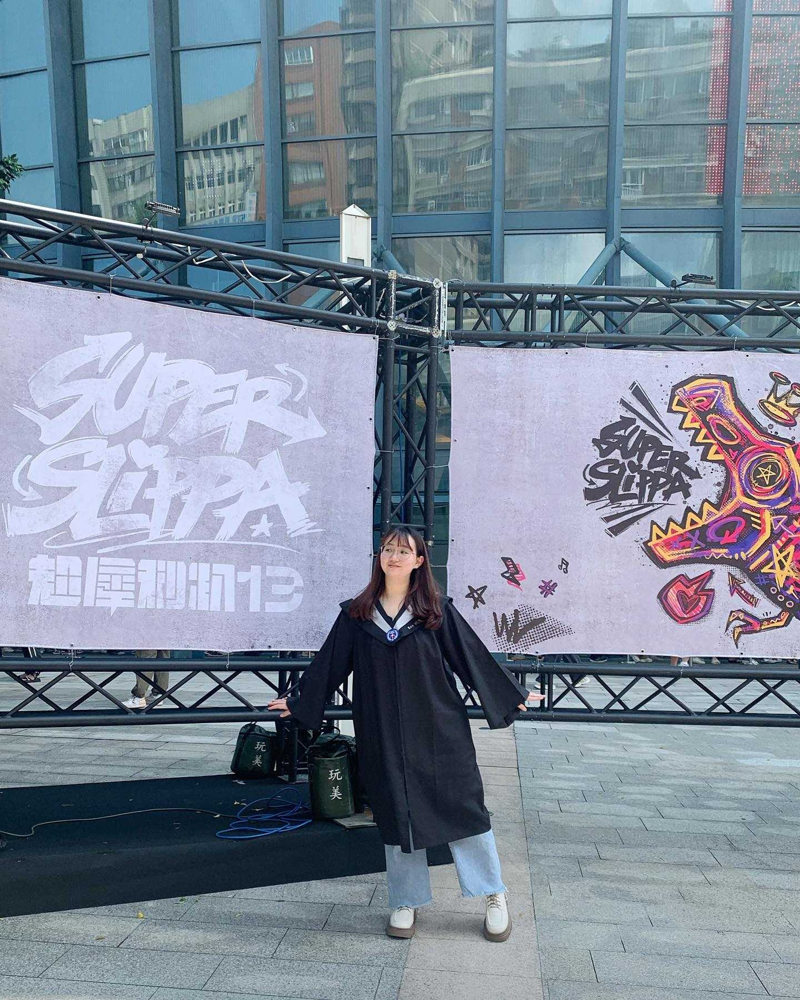
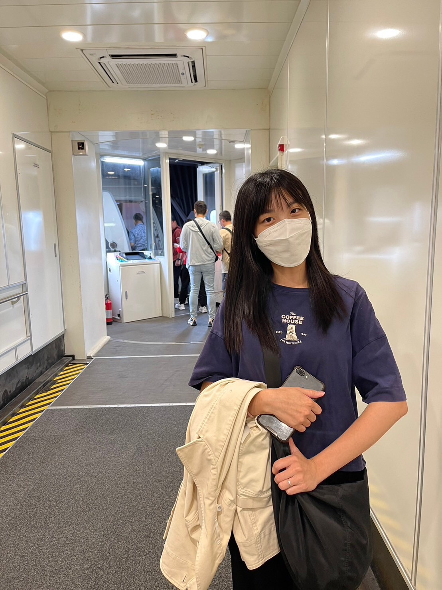
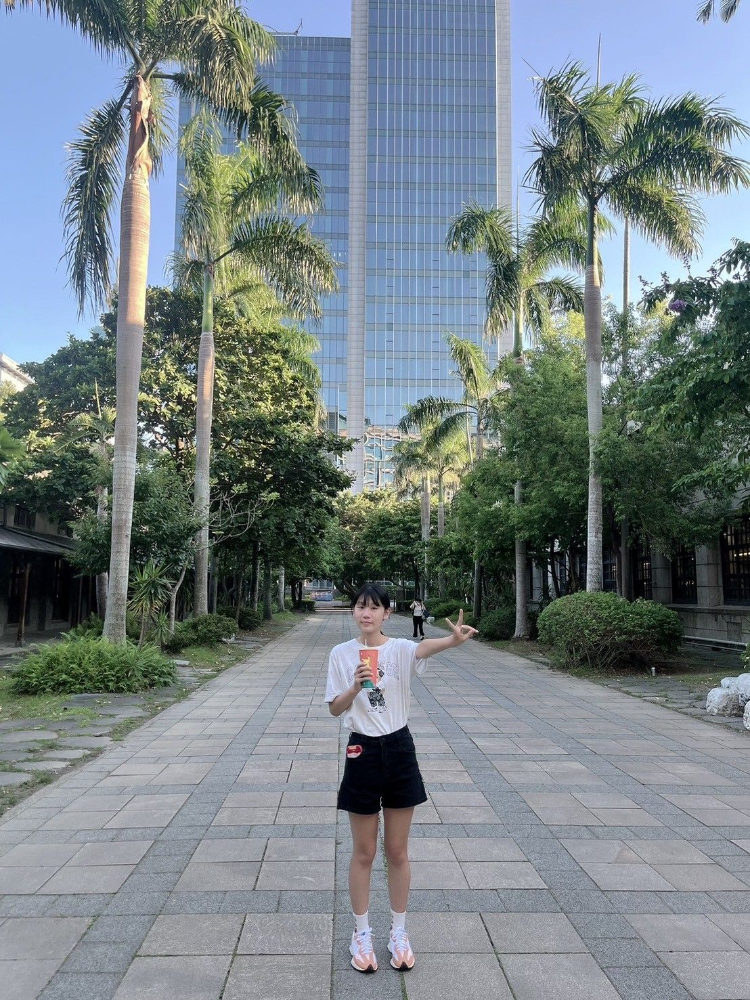
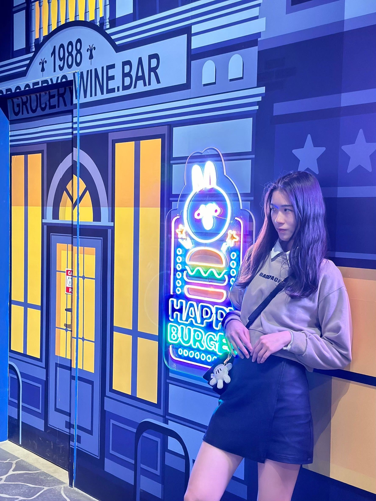
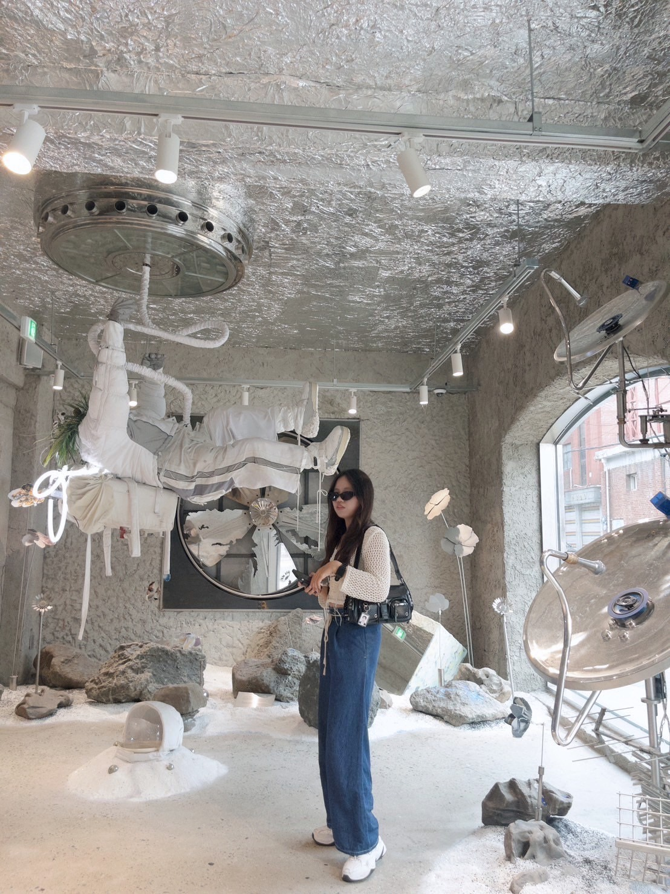

組員資料
以下為本專題的程式開發人員

資管四甲 11044132 曾雯琪
負責網頁前端設計+AI送養文程式撰寫

資管四甲 11044147 林秀羽
負責網頁前端設計+寵物影像辨識撰寫
資管四甲 11044148 陳王云
負責網頁前端設計+寵物影像辨識撰寫

資管四甲 11044151 吳銘芳
負責網頁前端設計+AI走失文案程式撰寫

資管四甲 11044154 邱莉玟
負責網頁前端設計+寵物地圖程式撰寫
